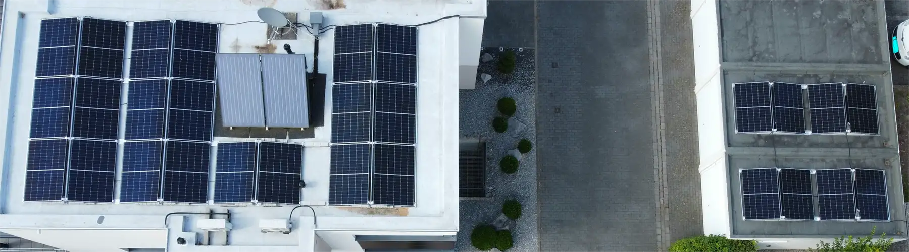

Flachdachanlage auf Foliendach und Garagen
12,32 kWpSpeicher 8,2 kWhAlpha ESS HI10
Ost-West-Ausrichtung auf Foliendach und Garagen. Wegen der Aufbauten und der Modullage wurde die gesamte Fläche mit Leistungsoptimierern versehen. Wallbox mit Überschussladen.
Städteregion Aachen